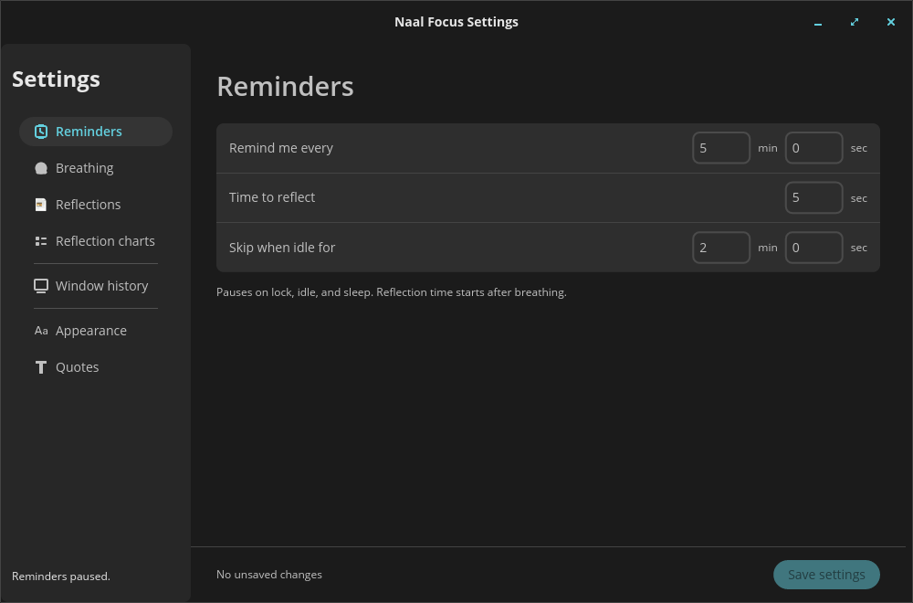
Reminders
Reminder interval, reflection duration after breathing, and idle threshold. Enter minutes and seconds.
Canonical product & UI reference
A COSMIC desktop applet that periodically dims every monitor so you can breathe, notice your attention, and optionally write a private reflection.
Starts paused. Default timing: every 5 minutes → 14-second breathing entrance → 5-second reflection.
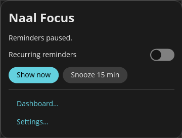
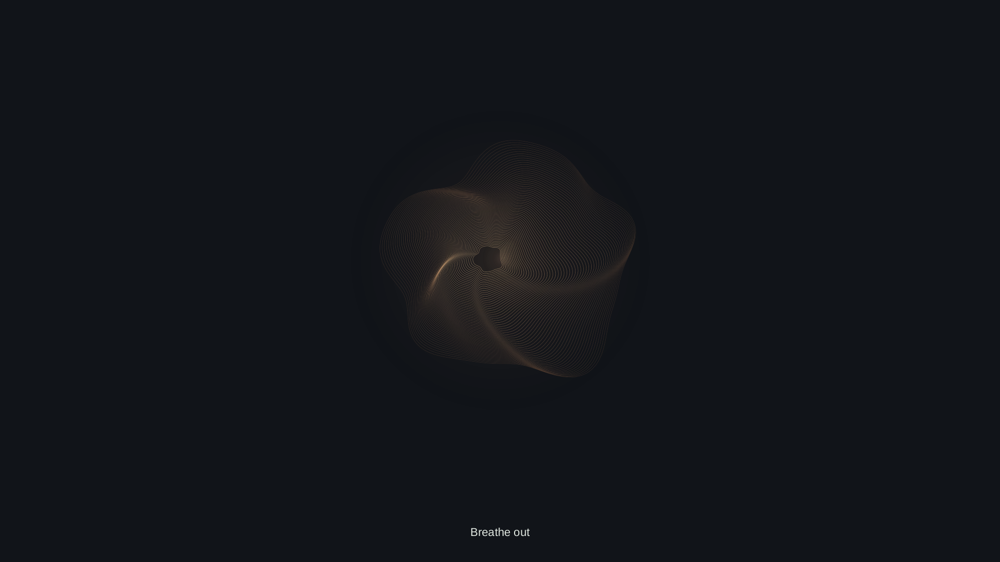
Geometry and breath cues give you a quiet transition. Every monitor shares the same breath.
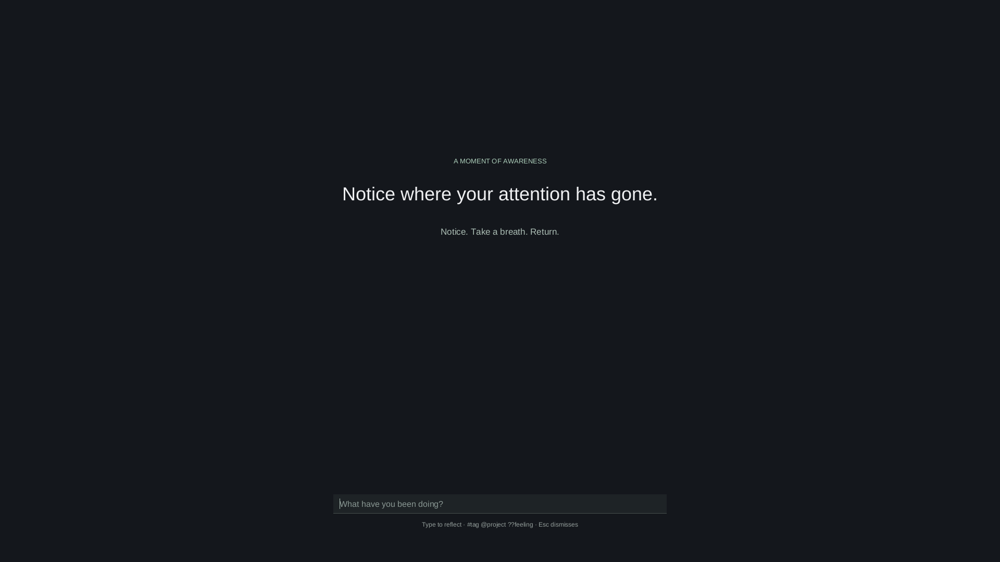
The quote prompts awareness. Writing is optional; doing nothing lets the reminder close automatically.
The reminder takes keyboard focus. Esc dismisses it when no draft or suggestions are active; background clicks do nothing.
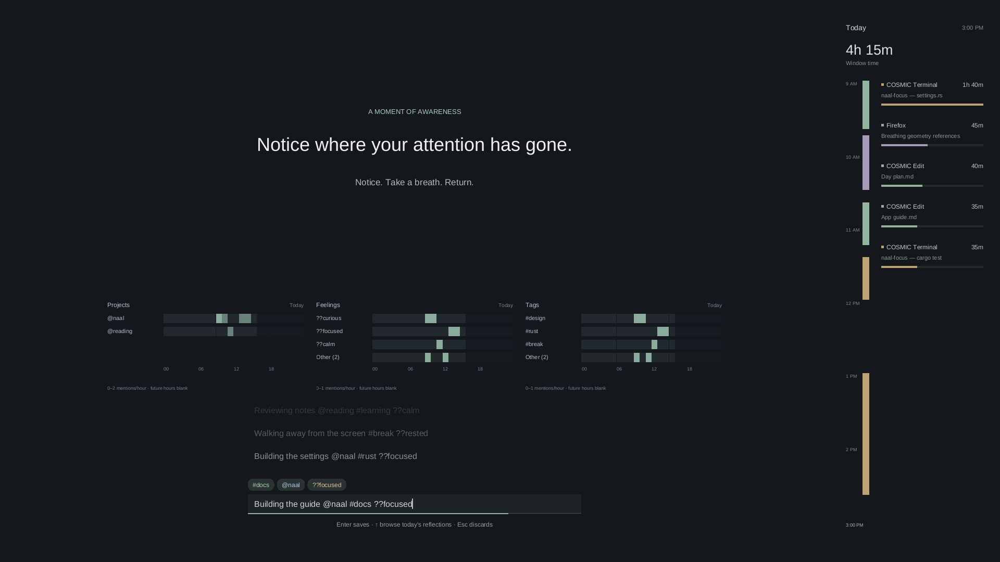
Turn Enable reflections off to hide writing, past reflections, metadata, hints, and charts. The quote, breathing, and optional focus sidebar remain. Saved history is kept.
#tags, @projects, and ??feelings from your text. Nothing inferred.Enter saves; Enter again reopens for correction. In history, Enter copies, then Enter saves a new moment.
↑ / ↓ select suggestions or browse history; Tab completes a suggestion. Esc closes suggestions, then cancels a draft or exits browsing, then dismisses.
Choose a section on the left; its controls stay together on the right. Closing Settings leaves the applet running.

Reminder interval, reflection duration after breathing, and idle threshold. Enter minutes and seconds.
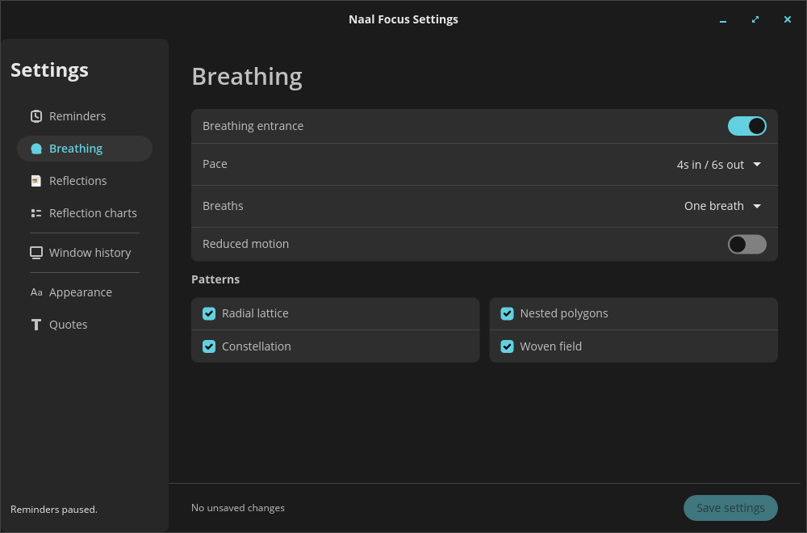
Breath pace, count, reduced motion, and allowed patterns. Keep at least one pattern.
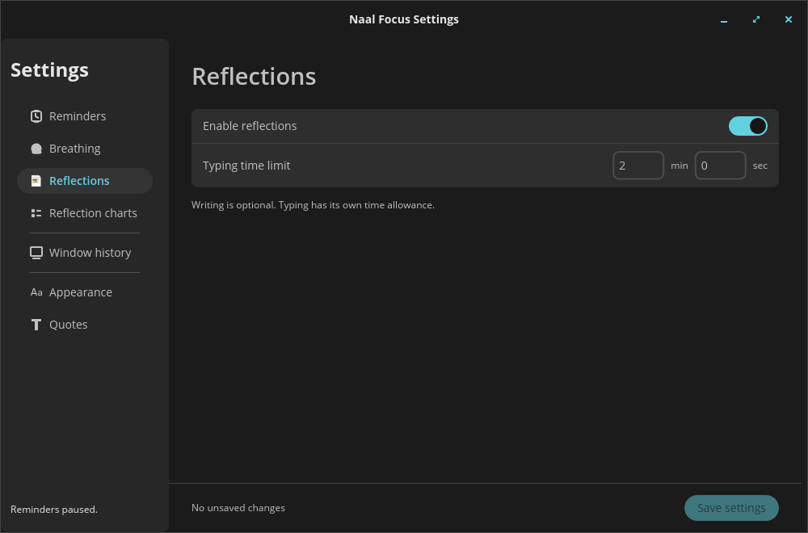
Show or hide writing and past reflections. Set a separate typing allowance; saved history is kept.
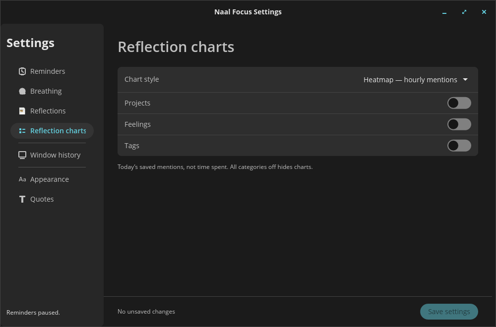
Choose a style and switch Projects, Feelings, and Tags independently. All off hides charts.
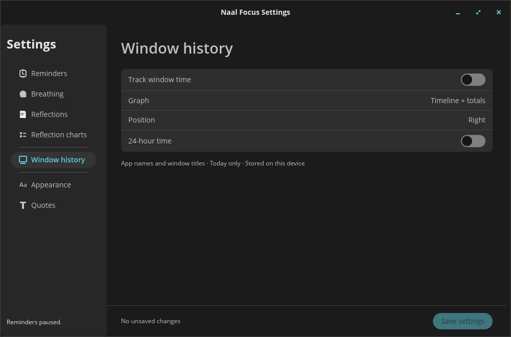
Opt into local window-time tracking. Choose the graph, side, and 12/24-hour time.
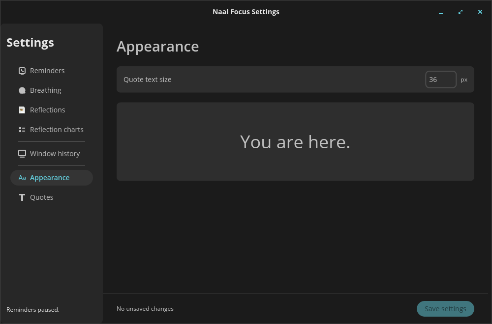
Set the quote text size, with a sample to see its size.
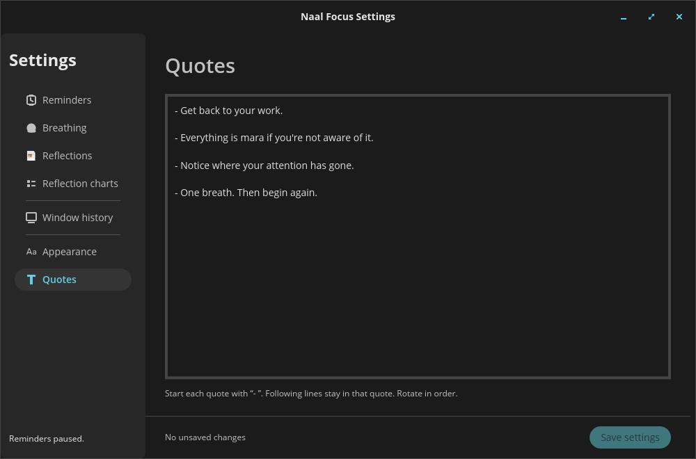
Edit your rotating prompts. Start each with - ; following lines stay in that quote.
Save applies the draft together and restarts the reminder interval. A valid draft also saves when the window loses focus. Switching sections keeps your edits; Save and errors stay visible.
A local HTML snapshot of saved reflections, regenerated whenever opened from the applet. Not the window-time log.
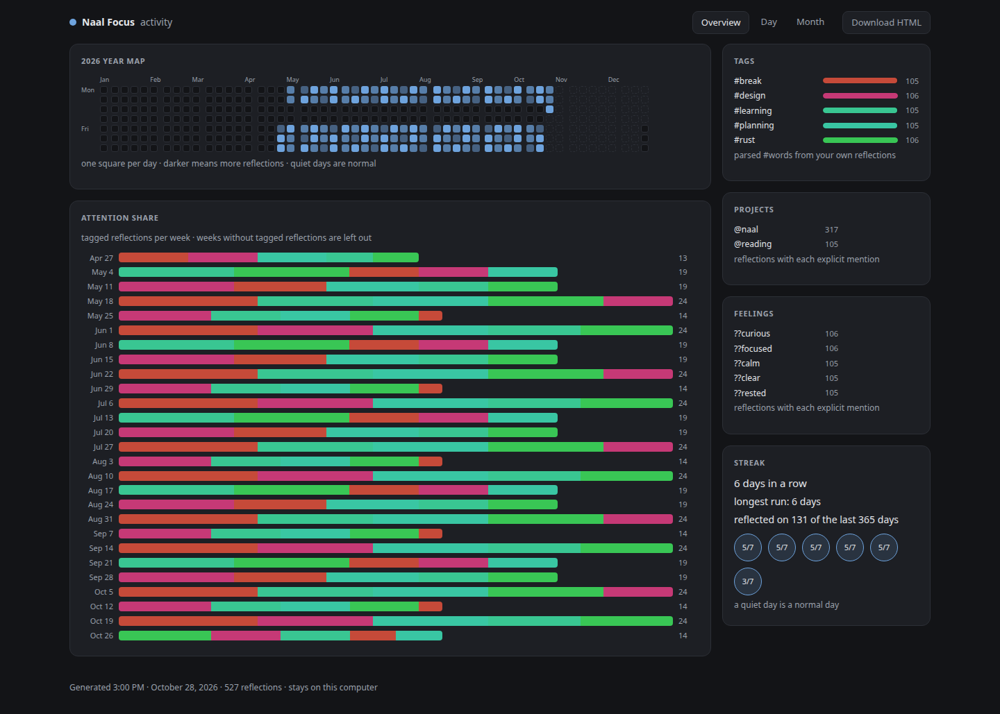
Patterns across days and weeks, plus tag, project, and feeling counts.
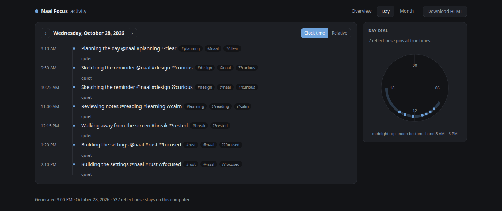
Read reflections in order; the 24-hour dial places them at their saved times.
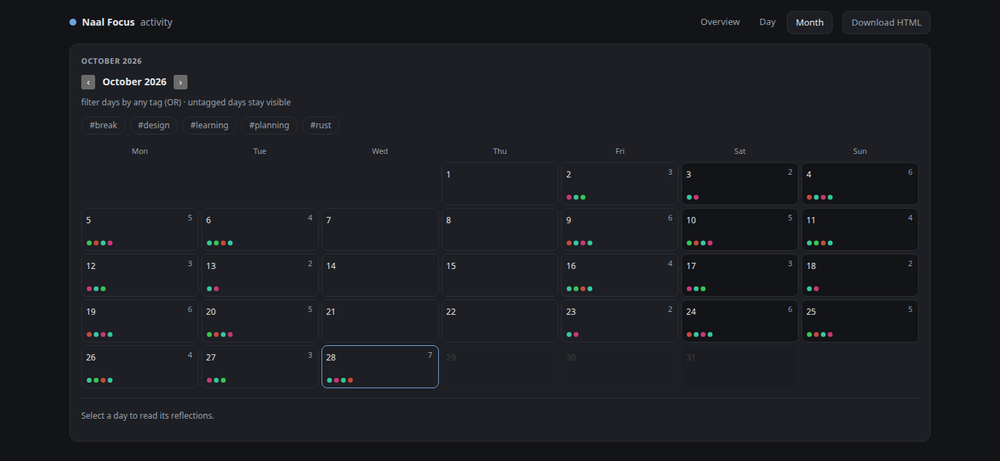
Find a day, filter by tags, and open its reflections.
Download HTML saves a standalone offline copy. Screenshots above use fabricated demo entries.
Only submitted reflections are stored in ~/.naal-focus/activity.jsonl. No automatic draft saving, cloud, or accounts.
Opt-in window history lives in ~/.naal-focus/focus.json; only today is retained. Titles can be sensitive.
Reminders are suppressed on idle, lock, or sleep. Window tracking has its own switch and continues while reminders are paused or snoozed.
No screenshots or raw keystroke history are recorded. Foreground-window time is not a measure of productivity.